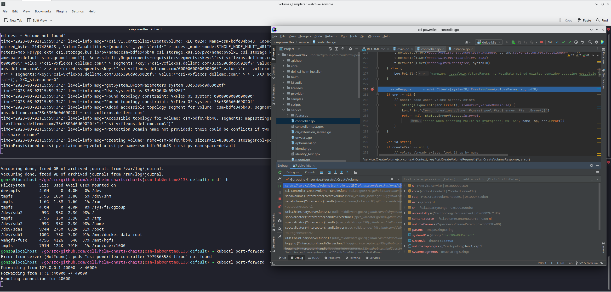

Use go debugger's delve with Kubernetes
Some time ago I faced a bug where it was untrivial to understand the precise workflow.
One of the beauties of the open-source is that the user can also take the pilot seat ;-)
In this article, we will see how to compile the Dell CSI driver for PowerFlex with a debugger, configure the driver to allow remote debugging, and attach an IDE.
Compilation
Base image
First, it is important to know that Dell and RedHat are partners and all CSI/CSM containers are certified by RedHat.
This comes with a couple of constraints, one of them is that all containers use UBI-minimal image as a base-image.
CSI PowerFlex needs the e4fsprogs package to format file systems in ext4.
In this post, we utilize an Oracle Linux mirror, which allows us to access binary-compatible packages without the need for registration.
The Oracle Linux 8 repo is:
[oracle-linux-8-baseos]
name=Oracle Linux 8 - BaseOS
baseurl=http://yum.oracle.com/repo/OracleLinux/OL8/baseos/latest/x86_64
gpgcheck = 0
enabled = 1
Delve
There are several debugger options available for Go. For our purposes, we prefer to use delve as it allows us to connect to a remote Kubernetes cluster.
Our Dockerfile employs a multi-staged build approach.
In the build stage we download delve with:
RUN go get github.com/go-delve/delve/cmd/dlv
To achieve better results with the debugger, it is important to disable optimizations when compiling the code:
CGO_ENABLED=0 GOOS=linux GO111MODULE=on go build -gcflags "all=-N -l"
After rebuilding the image and pushing it to your registry, you need to expose the Delve port for the driver container:
ports:
- containerPort: 40000
Usage
Assuming that the build has been completed successfully and the driver is deployed on the cluster, we can expose the debugger socket locally:
kubectl port-forward -n powerflex pod/csi-powerflex-controller-uid 40000:40000
Next, we can open the project in our favorite IDE and ensure that we are on the same branch that was used to build the driver.
You can use Goland or VSCode for remote debugging.

And here is the result of a breakpoint on CreateVolume call:

The full code is here: https://github.com/dell/csi-powerflex/compare/main...coulof:csi-powerflex:v2.5.0-delve .
If you liked this information and need more deep-dive details on Dell CSI & CSM feel free to reach out on: https://dell-iac.slack.com .